Asia Family Trip — Taipei & East China亚洲家庭旅行 — 台北与华东
Tue, Sep 1Taipei hotel — BOOKED ✅台北酒店 — 已订 ✅✅ Booked✅ 已订
- ✅ Booked — Hotel Resonance Taipei, Tapestry Collection by Hilton, No. 7, Linsen S. Rd., Zhongzheng District, Taipei. 3 nights: check-in Sep 10, check-out Sep 13; 2 rooms (both on Hilton). Booked. map ↗✅ 已订好 — Hotel Resonance Taipei, Tapestry Collection by Hilton（Hilton 旗下），林森南路7号, 中正区, 台北。3 晚：9/10 入住、9/13 退房；2 间房（都订在 Hilton）。已订。地图 ↗
Thu, Sep 3Fill TWAC arrival card (opens today)填 TWAC 入境卡（今天开放）🛂 Docs🛂 证件
- TWAC online arrival card opens today — the travelers fill it now (only accepted within 7 days before arrival, i.e. Sep 3–9). Enter the real hotel address = Hotel Resonance Taipei, No. 7, Linsen S. Rd., Zhongzheng District, Taipei, Taipei. (traveler enters on China travel document + entry document.)TWAC 入境卡今天起可填——4 位美籍现在填（只能在抵达前 7 天内，即 9/3–9/9），地址填实际入住的 Hotel Resonance Taipei（林森南路7号，中正区）。（traveler 用中国旅行文件+入境文件入境。）
Fri, Sep 4NPM admission + Dragon Canon reservation completed ✅✅ 故宫门票+龙藏经预约已完成🏛️ Done🏛️ 已完成
- ✅ Paid/booked: National Palace Museum North Branch “Admission + Tibetan Dragon Canon special exhibition reservation” tickets, 5 tickets total, visit date 2026-09-11; total paid NT$1,750（≈US$55）.✅ 已付款/预约成功：故宫北院「北院（門票+龍藏經特展預約）參觀券」，共 5 张，参观日 2026-09-11；总价 NT$1,750（≈US$55）。
- Reserved Dragon Canon room 103 slot: 12:00–13:00. Official FAQ clarification: this slot applies only to room 103 Dragon Canon, not whole-museum entrance. Plan: depart hotel 08:10–08:15 → enter NPM ~09:00 → general galleries 09:00–11:45 → queue at room 103 ~11:45 → Dragon Canon 12:00–13:00.《龙藏经》103 陈列室预约时段：12:00–13:00。官方 FAQ 修正：12:00 只适用于103 展间《龙藏经》，不是整馆入馆时间。计划：08:10–08:15 酒店出发 → 约09:00 入馆 → 09:00–11:45 常设展 → 约11:45 到 103 排队 → 12:00–13:00《龙藏经》。
- QR is scanned/shown twice: once at the museum gate, again at room 103. Tickets are paid and confirmed; ticket files and QR codes remain private and are not linked from this public page. English docent tour at signup.npm.edu.tw is unavailable/not booked; fallback = on-site English audio guide (NT$150–200（≈US$5–6）) unless a commercial tour is separately booked.QR 用两次：入闸门扫 1 次，进入 103 展间再出示 1 次。票据已付款并确认；票据文件和二维码仅私人保存，公开网页不提供链接。故宫英文导览 signup.npm.edu.tw 仍不可用/未订；备选为现场英文语音导览 NT$150–200（≈US$5–6），除非另订商业导览。
Sat, Sep 5Choose TPE airport transfer — Klook van recommended9/10 接机方案决定 — Klook 7/8 座 van 优先🚐 Decision🚐 决策
- Group profile: 5 passengers + Mom + ~5 checked bags/carry-ons, DL69 arrives TPE T2 ~19:55 on Sep 10, drop-off Hotel Resonance Taipei, No. 7 Linsen S. Rd., Zhongzheng District.团队条件：5 人 + Mom + 约 5 件托运行李/随身行李，DL69 9/10 约19:55 抵达 TPE T2，目的地 Hotel Resonance Taipei, No. 7 Linsen S. Rd., Zhongzheng District。
- Recommendation: pre-book a Klook 7/8-seat private airport transfer by 2026-09-08 at latest (Sep 5 is the planned action date). Expected NT$2,200–2,800 / US$71–90, fixed price, meet & greet/name board, flight tracking, waiting time, door-to-door; enter fields: DL69, 5 pax, ~5 checked bags + carry-ons, Hotel Resonance address. Do not book/pay yet.最终建议：预订 Klook 7/8 座 private airport transfer，最晚 2026-09-08 前完成（9/5 为计划操作日）。约 NT$2,200–2,800 / US$71–90，固定价、举牌接机、航班追踪、等待时间、门到门；填写 DL69、5 人、约 5 件托运行李+随身、Hotel Resonance 地址。现在不订/不付款。
- Comparison: KKday 7/8-seat is reliable second choice but usually pricier (NT$2,850–3,000 / US$92–97); Uber works at TPE but XL/large-vehicle capacity for 5+luggage is not guaranteed and may require 2 cars/surge/no meet-and-greet/data; official taxi is on-demand fallback but may need a van taxi or 2 cars plus meter/airport surcharge; Airport MRT is cheapest (~NT$150（≈US$5）/person to Taipei Main + short taxi) but worst for Mom after long-haul due to luggage transfers/walking.比较：KKday 7/8 座类似且可靠，但通常较贵（NT$2,850–3,000 / US$92–97）；Uber 可在 TPE 使用，但 UberXL/大车对 5 人+行李容量不保证，可能要 2 车/涨价/无举牌且需落地网络；官方 taxi 可现场兜底，但可能需大型车或 2 车，跳表+机场附加费；机场捷运最便宜（约 NT$150（≈US$5）/人到台北车站+短程 taxi），但长途后拖行李换乘/步行，对 Mom 最不友好。
- Keep 9/12 charter separate: Beitou is the recommended default; if switching to Jiufen/Yangmingshan, preserve the current 7/9-seat all-day charter budget NT$3,400–3,900（≈US$107–123） and public-transit alternatives.9/12 包车另算：北投为推荐默认；若改九份/阳明山，继续保留 7/9 座全日包车预算 NT$3,400–3,900（≈US$107–123） 及公共交通备选。
Mon, Sep 7Buy + install the eSIM买好并安装 eSIM📱 Data📱 网络
- Buy and install your eSIM today (Airalo / Ubigi / Nomad) on home Wi-Fi and test it. The plan only starts on first use in Taiwan, so installing early costs nothing. (Plan A = 2 Chunghwa physical SIMs instead → buy at TPE on 9/10, nothing to do now.) Full guide → esim.html / eSIM 行前须知.今天就买好并装上 eSIM（Airalo/Ubigi/Nomad），在家 Wi-Fi 下装二维码并测试——套餐落地台湾首用才计时，提前装不浪费。（方案A＝2 张中华电信实体卡则不用现在买，9/10 桃园现场办。）完整方案 → esim.html / eSIM 行前须知。
- Download apps: Google Maps, Uber, Din Tai Fung queue, CWA weather, Klook / KKday.下载 App/网页：Google Maps、Uber、鼎泰丰取号、中央气象署 CWA、Klook/KKday。
Tue, Sep 8Entry entry document printed ✅入境文件已打印 ✅✅ Done✅ 完成
- ✅ Entry documents printed and ready. (TWAC arrival card is on Sep 3 — fill it Sep 3–9.)✅ 入境文件已打印并备妥。旅行文件/绿卡也已备齐。（TWAC 入境卡见 9/3——在 9/3–9/9 填。）
Wed, Sep 9Depart Seattle西雅图出发✈️ Travel day✈️ 旅行日
- 16:00 — Depart Seattle (SEA) on Delta DL69 to Taipei (A350-900, Main Cabin). Overnight flight.16:00 — 从西雅图机场 (SEA)搭乘 Delta DL69 前往台北（A350-900，Main Cabin）。夜间航班。
- DL69 departs SEA South Satellite (S gates, ~S12). Priority Pass lounge → The Club at SEA · South Satellite (mezzanine above gate S10, same concourse as your gate; 06:00–01:30; showers + quiet zones). Other PP lounge = The Club Concourse A (across A11, different concourse). Delta Sky Club is NOT Priority Pass.DL69 从 SEA 南卫星厅（S 登机口，约 S12）起飞。Priority Pass 休息室 → The Club at SEA · 南卫星厅（S10 登机口上方夹层，和登机口同一卫星厅、最近；06:00–01:30；有淋浴+安静区）。另一个 PP 休息室在 Concourse A（A11 对面，需换厅）；Delta Sky Club 不属于 Priority Pass。
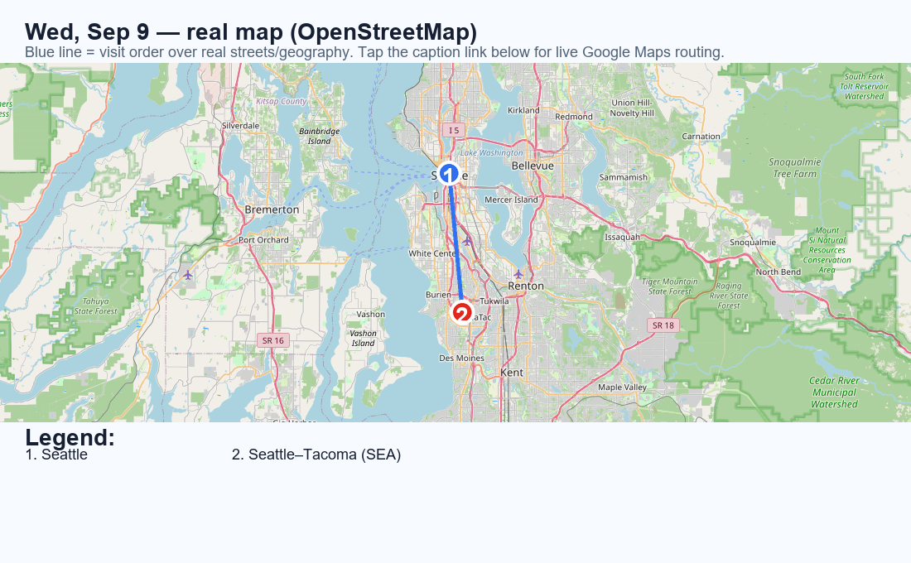
① Seattle → ② Seattle–Tacoma (SEA)① 西雅图 → ② 西雅图机场 (SEA)
🧭 Open multi-stop route in Google Maps🧭 在 Google Maps 打开多点路线


Thu, Sep 10Arrive Taipei — Taoyuan → hotel → night market抵达台北 — 桃园→酒店→夜市🛬 + 🍢 Ningxia🛬 + 🍢 宁夏
- 19:55 — Land Taoyuan (TPE) T2 (DL69). Immigration: Use the immigration lane appropriate to each travel document; carry the required originals. Bags → green customs channel (no meat).19:55 — 抵达桃园 (TPE) T2（DL69）。入境查验：按各自旅行文件选择正确的入境通道，并携带所需纸质原件。取行李→海关绿色通道（禁带肉制品）。
- Do 3 things in T2 arrivals before you leave (~21:00):
- ① EasyCard ×5 — 24h 7-Eleven / FamilyMart in arrivals (or EasyCard counter 08:00–22:00): NT$100（≈US$3）/card + top up NT$500–600（≈US$16–19） each; pay cash — EasyCard top-up is cash-only in Taiwan (cards can't add value), though the SIM counter below does take cards.
- ② Data — pre-installed eSIM: Settings → turn plan on + Data Roaming ON (works on landing). Else buy a SIM at Chunghwa / Taiwan Mobile (24h) with travel document (5-day 5G ≈NT$600（≈US$19）).
- ③ Cash — Bank of Taiwan / Mega (24h, 1F, travel document, NT$30（≈US$1） fee) change NT$10,000–15,000（≈US$316–474）; or ATM (decline DCC → charge in TWD). Full FX guide ↗
- ① 买悠游卡 EasyCard ×5 — 入境大厅 24h 7-11/全家（或电子票证柜台 08:00–22:00）：每张 NT$100（≈US$3） + 每张加值 NT$500–600（≈US$16–19）；加值只能付现金（全台悠游卡储值都不收信用卡；但下方电信柜台买 SIM 可刷卡）。
- ② 上网 — 已装 eSIM：设置里启用套餐 + 打开数据漫游（落地即用）；否则到 中华电信/台湾大哥大（24h）凭旅行文件买卡（5G 5天 ≈NT$600（≈US$19））。
- ③ 换现金 — 台银/兆丰（24h、1F、凭旅行文件、手续费 NT$30（≈US$1））换 NT$10,000–15,000（≈US$316–474）；或 ATM（拒绝 DCC、选新台币 TWD）。完整换汇方案 ↗
- 🚐 Airport transfer — recommended plan is a pre-booked Klook 7/8-seat private van for 5 pax + ~5 checked bags/carry-ons (NT$2,200–2,800 / US$71–90; meet & greet/name board + flight tracking + waiting time) → ~45–60 min door-to-door to hotel, check in ~22:15. Backup: KKday 7/8-seat (NT$2,850–3,000 / US$92–97); Uber/taxi/MRT only as fallbacks.🚐 接机 — 推荐提前订 Klook 7/8 座 private van，适合 5 人 + 约 5 件托运行李/随身（NT$2,200–2,800 / US$71–90；举牌接机+航班追踪+等待时间）→ 约45–60分钟门到门到酒店，约22:15 入住。备用：KKday 7/8 座（NT$2,850–3,000 / US$92–97）；Uber/taxi/MRT 仅兜底。
- 🏨 Stay: Hotel Resonance Taipei ✅ (Tapestry Collection by Hilton · No.7 Linsen S Rd, Zhongzheng · booked) — hotel notes ↗ · map ↗🏨 住宿：Hotel Resonance Taipei ✅（Tapestry Collection by Hilton · 林森南路7号, 中正区, 台北 · 已订）— 住宿说明 ↗ · 地图 ↗
- 🍢 ~22:40 — supper at Ningxia Night Market (closest, till ~23:30); first night 3–5 bites (oyster omelet, tofu pudding, lu-rou-fan).🍢 约22:40 — 宁夏夜市宵夜（离酒店最近，营业到约23:30）；第一晚只吃 3–5 样（蚵仔煎、豆花、卤肉饭）。
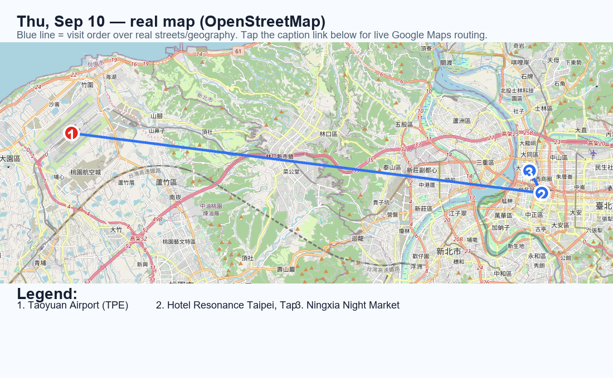
① Taoyuan Airport (TPE) → ② Hotel Resonance Taipei, Tapestry Collection by Hilton ✅ booked → ③ Ningxia Night Market① 桃园机场 (TPE) → ② Hotel Resonance Taipei, Tapestry Collection by Hilton ✅ 已订 → ③ 宁夏夜市
🧭 Open multi-stop route in Google Maps🧭 在 Google Maps 打开多点路线


Fri, Sep 11NPM general galleries + Dragon Canon 12:00 · Taipei 101故宫常设展上午 + 龙藏经12:00展间时段 · 台北101🏛️ + 🗼 + 🥟🏛️ + 🗼 + 🥟
- 08:10–08:15 — depart Hotel Resonance Taipei by taxi/van for the National Palace Museum; Mom-friendly early start, no MRT transfer unless everyone wants it.08:10–08:15 — 从 Hotel Resonance Taipei 打车/包车出发去故宫博物院；Mom 友好，除非大家想省钱，否则不换乘捷运。
- ~09:00 — enter the NPM North Branch using the ticket QR at the main gate. Important correction: 12:00 is the Dragon Canon room 103 reserved visit slot only, not the museum-entry time. Official FAQ: after successful purchase, other galleries in the First Exhibition Building can be visited freely at a convenient time.约09:00 — 持票据 QR 在北院入口入闸。重要修正：12:00 是《龙藏经》103 展间预约参观时段，不是故宫北院入馆时间。官方 FAQ：第一展览馆内其余展间可于方便时段自由参观，不须另约。
- 09:00–11:45 — National Palace Museum general galleries (open until 19:00; 1F wheelchair; Jadeite Cabbage in Gallery 302 ✓; Meat-shaped Stone NOT in Taipei Sep 7–14 — skip). Keep a simple highlights route and take sitting breaks.09:00–11:45 — 故宫常设展/其他展间（开放至 19:00；1F 可租轮椅；翠玉白菜在 302 展厅✓；肉形石 9/7–14 不在台北→跳过）。走精华路线，中间安排坐下休息。
- 11:45–12:00 — go to Room 103 and queue for the Tibetan Dragon Canon. QR is used twice: scan once at the gate, then show it again at room 103. 🎫 NPM tickets (5 pax; Dragon Canon 12:00–13:00 room slot): Tickets are paid and stored privately; no ticket files or links are included in the public page.11:45–12:00 — 前往 103 陈列室 排队看《龙藏经》。QR 用两次：入闸门扫 1 次条码，进入 103 展间再出示 1 次。🎫 故宫票据 5 张（《龙藏经》103 展间 12:00–13:00 时段）：票据已付款并仅私人保存；公开网页不包含票据文件或链接。
- 12:00–13:00 — reserved Tibetan Dragon Canon visit slot in room 103; after this, leave before fatigue builds.12:00–13:00 — 《龙藏经》103 展间预约时段；看完就撤，避免累过头。
- 13:15–15:30 — lunch + rest: taxi back toward Taipei Main / Hotel Resonance or go straight to Xinyi for a seated meal/café; Mom gets a real recovery break before Taipei 101.13:15–15:30 — 午餐+休息：打车回台北车站/Hotel Resonance 一带，或直接去信义找坐得舒服的午餐/咖啡；给 Mom 留真实恢复时间。
- 🗼 Taipei 101 (arrive 16:25) — buy the NT$600（≈US$19） observatory ticket online (Klook/KKday); a Fri sunset is busy so consider the Fast Pass ~NT$1,200（≈US$38） to skip the queue. New entrance = Office Tower 1F (since 2026-07). Up to 89F indoor → sunset 18:02 → night views (91F open-air only if weather entry document; no Elephant-Mountain climb).🗼 台北101（16:25 到） — 网上先买 NT$600（≈US$19） 观景台票（Klook/KKday）；周五傍晚人多，建议加买 快速通关约 NT$1,200（≈US$38） 免排队。新入口在办公大楼 1F（2026-07 起）。上 89F 室内 → 日落 18:02 → 夜景（91F 露台看天气才开；不爬象山）。
- ☕ Your NT$600（≈US$19） = ticket + coffee up top: 89F has the kafeD 101 café — with the observatory ticket just walk in, confirmed/cake (NT$120–350（≈US$4–11）) and sit for the sunset. (Cheaper alt = 35F Starbucks, reserve ahead ☎(02)8101-0701, min NT$250（≈US$8）/pax, 90 min — pick one, not both.)☕ 「买 NT$600（≈US$19） 观景台票，上楼顺便喝咖啡」就是这样：89F 有 kafeD 101 咖啡厅 — 持观景台票直接进去点咖啡/蛋糕（NT$120–350（≈US$4–11）），坐着等日落。（省钱方案＝35F 星巴克，需提前电话 ☎(02)8101-0701 预约、低消 NT$250（≈US$8）/人、限 90 分钟 — 与观景台二选一。）
- 🥟 Dinner — Din Tai Fung, Taipei 101 B1 (walk-in take-a-number; 70% full: xiaolongbao + shrimp fried rice + wontons + greens) → Linjiang / Tonghua Night Market near 101, till 00:00.🥟 晚餐 — 鼎泰丰 台北101 B1（现场取号候位；七分饱）→ 临江街/通化夜市（近101，到00:00）+ 阿婆水果摊。
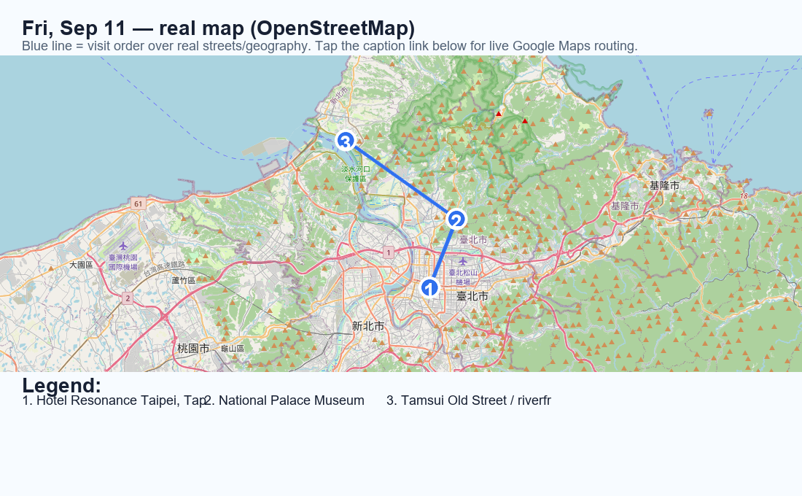
① Hotel Resonance Taipei, Tapestry Collection by Hilton ✅ booked → ② National Palace Museum → ③ Taipei 101 → ④ Linjiang / Tonghua Night Market① Hotel Resonance Taipei, Tapestry Collection by Hilton ✅ 已订 → ② 故宫博物院 → ③ 台北101 → ④ 临江街/通化夜市
🧭 Open multi-stop route in Google Maps🧭 在 Google Maps 打开多点路线


Sat, Sep 12Beitou hot-springs spa day — ACTIVE9/12 北投温泉舒适日 — ACTIVE 主线♨️ Active plan♨️ 当前主线
- ACTIVE PLAN: Beitou hot-springs comfort day. Jiufen and Yangmingshan below are fallback-only and are not active stops.推荐默认(可改)：北投温泉舒适日。 这与已订台北 3 晚一致，也给 Mom 在故宫+101 后留出低强度恢复日。
- 10:15–11:15 — Beitou Hot Spring Museum + Thermal Valley, short flat sections only; the active Beitou card remains text-led because no additional verified open-license Beitou image was selected.上午偏晚 — 从 Hotel Resonance Taipei, Tapestry Collection by Hilton 出发去北投；Mom 优先打车/包车，省钱可捷运经台北车站/北投/新北投。地图 ↗
- 11:30–15:00 — seated lunch/café and a private hot-spring room; book two rooms if soaking. Return to Hotel Resonance for rest, then Raohe Night Market in the evening.北投温泉博物馆 + 地热谷短走 → 午餐/咖啡 → 私汤 1–1.5h（如泡汤订两间汤屋；见温泉说明）。
- FALLBACK ONLY — Jiufen: use a private vehicle, keep the old-street visit short, and cancel for heavy rain/typhoon; steep wet steps are not Mom-friendly.下午 — 回 Hotel Resonance Taipei 休息，避开时差低谷。
- FALLBACK ONLY — Yangmingshan: short roadside stops at Xiaoyoukeng/Qingtiangang/Zhuzihu only; images illustrate locations, not guaranteed September weather or accessibility.🍢 晚上 — 饶河街夜市（板南线到松山；到00:00）：胡椒饼、药炖排骨；彩虹桥夜景。
- 备选路线（非当前主线）：九份仅在天气干燥时包车短逛，雨天石阶湿滑；阳明山仅做小油坑/擎天岗/竹子湖短停。下方 6 张开放授权图片只属于备选卡，不表示会实际前往。
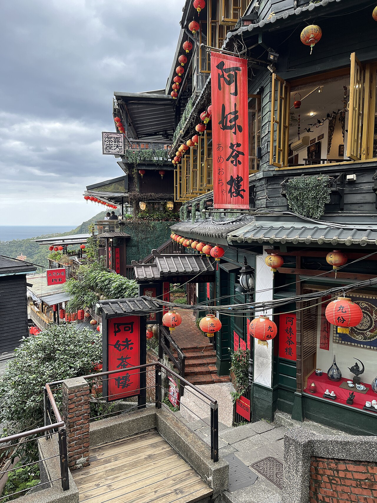
A-Mei Tea House, Jiufen, 2024.jpg by Another Believer, via Wikimedia Commons · source · CC BY-SA 4.0 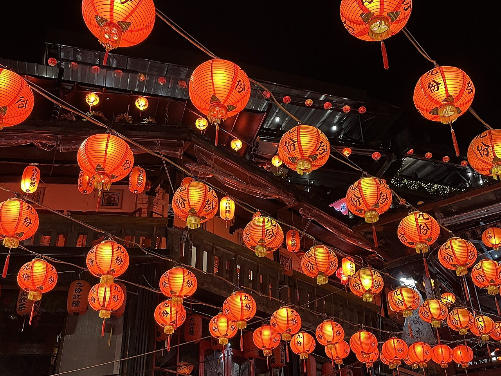
Jiufen, November 27, 2024 - 181.jpg by Another Believer, via Wikimedia Commons · source · CC BY-SA 4.0 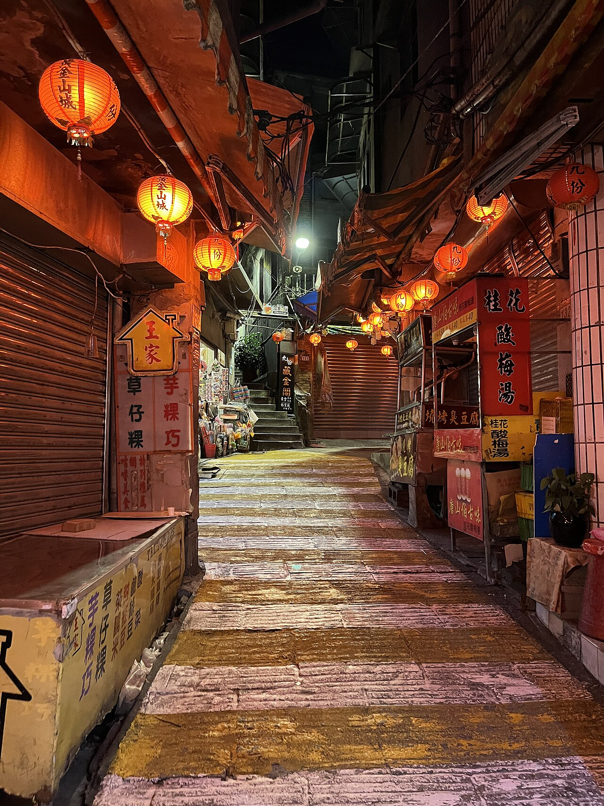
Jiufen, November 27, 2024 - 198.jpg by Another Believer, via Wikimedia Commons · source · CC BY-SA 4.0 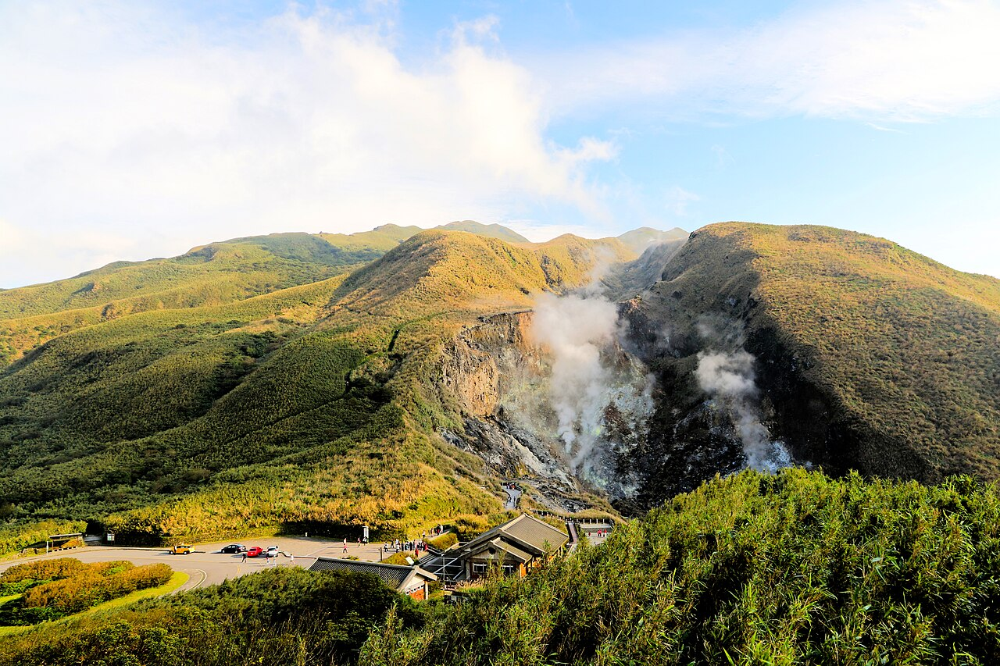
XiaoyoukengJamesHuang002.jpg by James CPHuang, via Wikimedia Commons · source · CC BY-SA 4.0 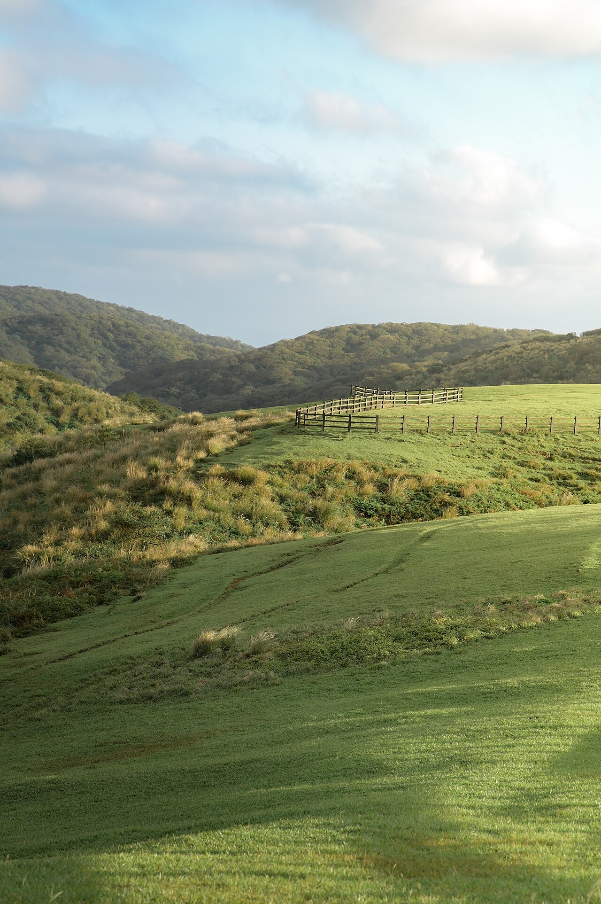
Qingtiangang Grassland, Taipei City, Taiwan.jpg by MarcChu, via Wikimedia Commons · source · CC BY 4.0 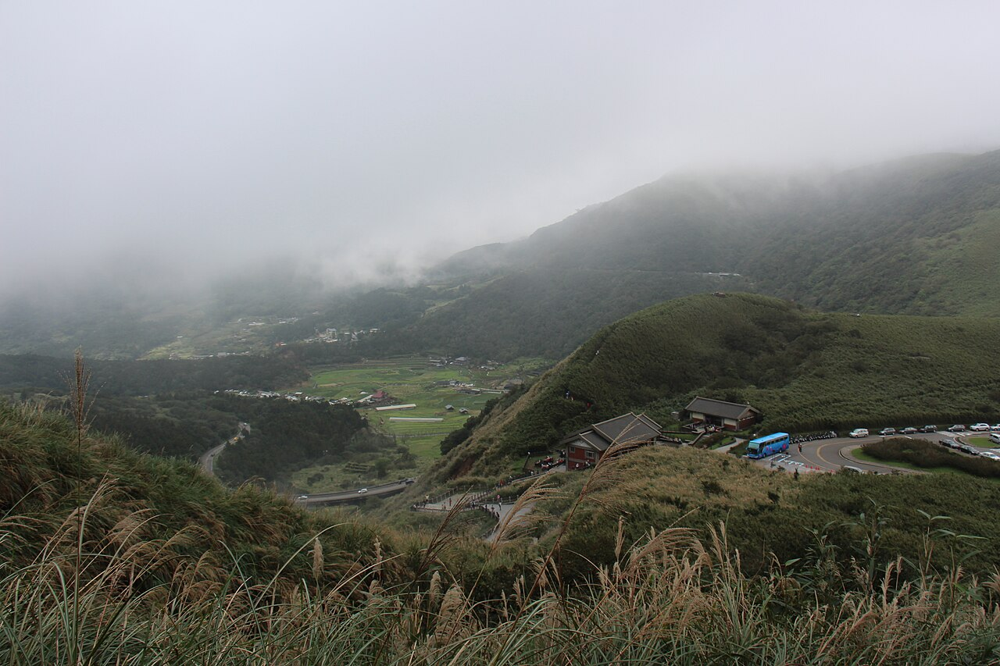
Zhuzihu from the Xiaoyoukeng Trail.jpg by Connie, via Wikimedia Commons · source · CC BY-SA 2.0
{kind=link}
{kind=link}
{kind=link}
{kind=link}
{kind=link}
{kind=link}
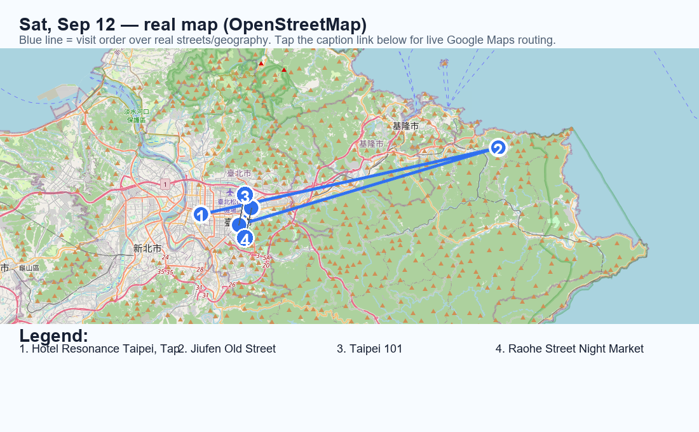
① Hotel Resonance Taipei, Tapestry Collection by Hilton ✅ booked → ② Beitou Hot Spring Museum → ③ Thermal Valley → ④ Raohe Street Night Market① Hotel Resonance Taipei, Tapestry Collection by Hilton ✅ 已订 → ② 北投温泉博物馆 → ③ 地热谷 → ④ 饶河街夜市
🧭 Open multi-stop route in Google Maps🧭 在 Google Maps 打开多点路线

Sun, Sep 13Ximending services + shopping → Shanghai Hongqiao西门町服务+采购 → 飞上海虹桥🛍️ + ✈️ + Qibao🛍️ + ✈️ + 七宝
- 08:30 pack/check out; hotel stores bags. Taxi to Carrefour Guilin for a compact gift/snack run, then Watsons Ximen, Ten Ren Tea and Kuo Yuan Ye; Red House shops open around 11:00.08:30 收拾/退房寄存行李；打车去家乐福桂林店买伴手礼，再到屈臣氏西门店、天仁茗茶、郭元益。西门红楼商店约11:00起陆续营业。
- 10:00–11:00 pre-book Six Star Foot Massage, Chengdu branch for five people; request gentle pressure, elevator/ground-floor access and simultaneous therapists. Safe service alternatives: scalp/shampoo treatment, basic manicure, eyebrow shaping or photo booth. Ear cleaning only at a professional sterilized studio and skip for pain/infection/ear surgery/anticoagulants.10:00–11:00 预约六星集足体养身会馆成都店，5 人同一时段、轻力度，并确认电梯/一楼。安全替代：头皮/洗发护理、基础美甲、修眉、拍贴机；采耳仅选消毒规范的专业店。离境当天不做激光/IPL；飞行前也不建议蜜蜡脱毛。
- Skip laser/IPL on departure day. Waxing is also not recommended immediately before flying because heat, friction and prolonged sitting can worsen irritation.退税：同一家指定 TRS 店同日一般需满 NT$2,000（≈US$63）；托运行李前完成机场所需步骤。约12:25回酒店取行李，13:15左右出发，13:40–14:00到松山 TSA T1，保留大缓冲。
- VAT refund: a designated TRS store generally requires at least NT$2,000（≈US$63） at the same store on the same day; present the required travel document and finish any airport procedure before checked baggage is surrendered.✈️ 东航 MU5098 松山 TSA 17:15 → 上海虹桥 SHA 18:55（约1h40，已订）。
- Return to Hotel Resonance Taipei for luggage by about 12:25; leave for Songshan (TSA) T1 around 13:15 and target 13:40–14:00 arrival, preserving a large buffer. After security → Plaza Premium Lounge (Priority Pass).约19:00 抵虹桥 → 住虹桥枢纽附近（Cordis / Hyatt 方案），若 Mom 体力允许，只做七宝老街轻晚餐/短逛；今晚不去外滩。🏨 住宿说明 ↗ · 细案：Shanghai-Hongqiao-Arrival.md ↗
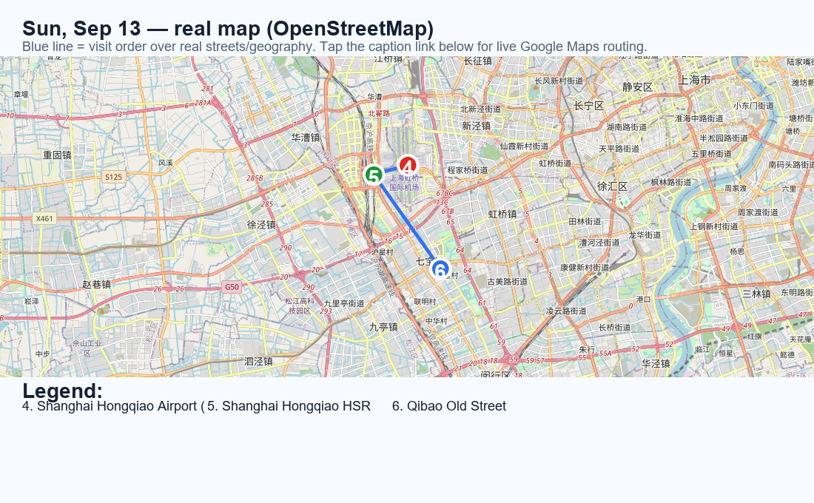
① Hotel Resonance Taipei, Tapestry Collection by Hilton ✅ booked → ② Ximending / Red House → ③ Songshan Airport (TSA) → ④ Shanghai Hongqiao Airport (SHA) → ⑤ Shanghai Hongqiao HSR → ⑥ Qibao Old Street① Hotel Resonance Taipei, Tapestry Collection by Hilton ✅ 已订 → ② 西门町 / 西门红楼 → ③ 松山机场 (TSA) → ④ 上海虹桥机场 (SHA) → ⑤ 上海虹桥站 → ⑥ 七宝老街
🧭 Open multi-stop route in Google Maps🧭 在 Google Maps 打开多点路线


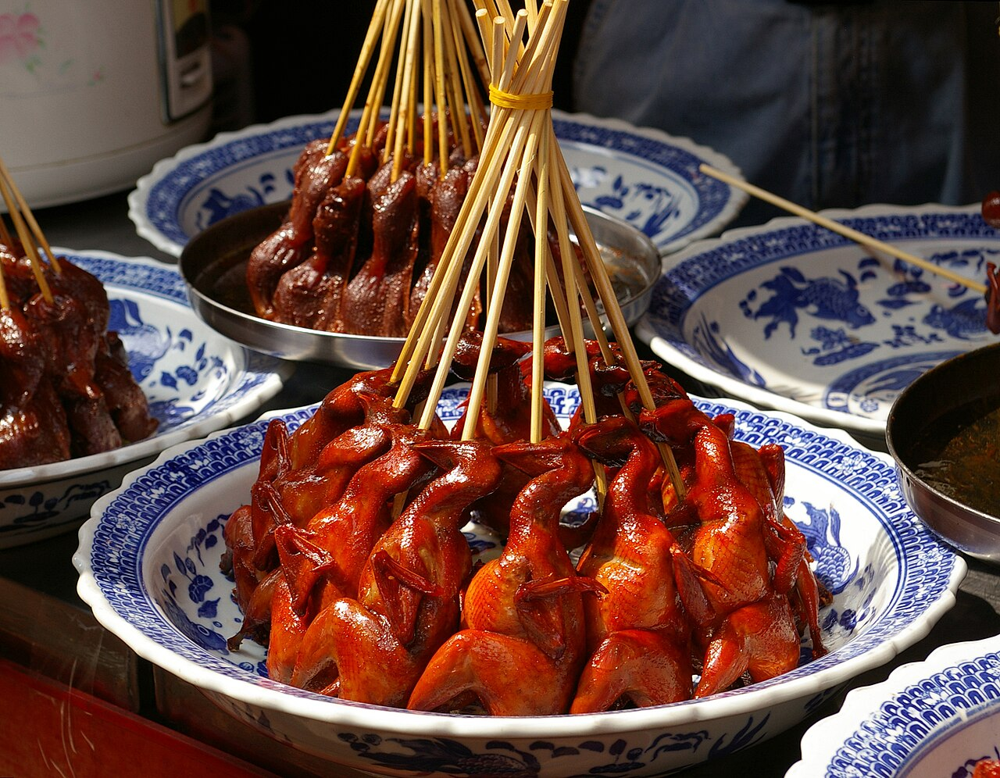
Mon, Sep 14Hongqiao → Suzhou old town虹桥 → 苏州老城🚄 Gardens · Shantang🚄 园林 · 山塘夜
- 🚄 Shanghai Hongqiao → Suzhou Station morning HSR; choose central Suzhou Station and drop luggage at the old-town hotel.🚄 上海虹桥→苏州站早班，先到老城酒店放行李。
- 08:20–10:20 Humble Administrator's Garden → 10:25–10:40 Suzhou Museum exterior only. It is Monday and the museum interior is closed. Continue to a seated Guanqian Street lunch and protect the 12:20–14:15 hotel rest.08:20–10:20 拙政园 → 10:25–10:40 苏州博物馆仅看外观；9/14 是周一，馆内闭馆。观前街坐下午餐，12:20–14:15 保留午休。
- 14:45–16:15 Master of the Nets Garden; after another short rest, go to Shantang Street for seated dinner, a canal cruise if operating, and only a 300–500 m illuminated stroll.14:45–16:15 网师园；休息后去山塘街坐下晚餐，游船如运营则乘船，只走300–500米灯光精华段。虎丘删除：单独约2.5–4小时，另加45–70分钟绕行，斜坡/石路/台阶不适合Mom，也会破坏午休。
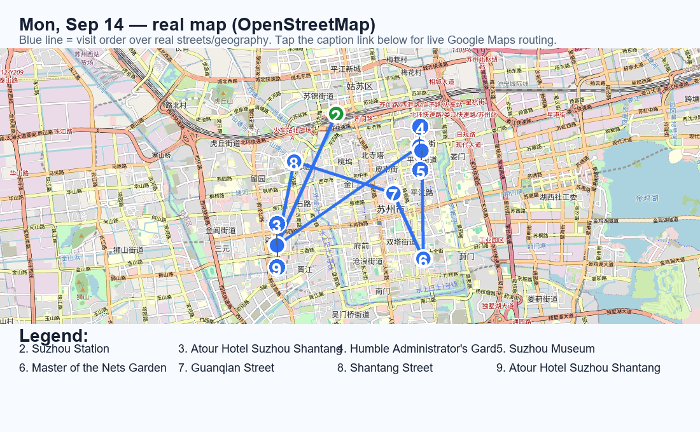
① Shanghai Hongqiao HSR → ② Suzhou Station → ③ Suzhou old-town hotel area → ④ Humble Administrator's Garden → ⑤ Suzhou Museum → ⑥ Guanqian Street → ⑦ Master of the Nets Garden → ⑧ Shantang Street → ⑨ Suzhou old-town hotel area① 上海虹桥站 → ② 苏州站 → ③ 苏州老城酒店区 → ④ 拙政园 → ⑤ 苏州博物馆 → ⑥ 观前街 → ⑦ 网师园 → ⑧ 山塘街 → ⑨ 苏州老城酒店区
🧭 Open multi-stop route in Google Maps🧭 在 Google Maps 打开多点路线


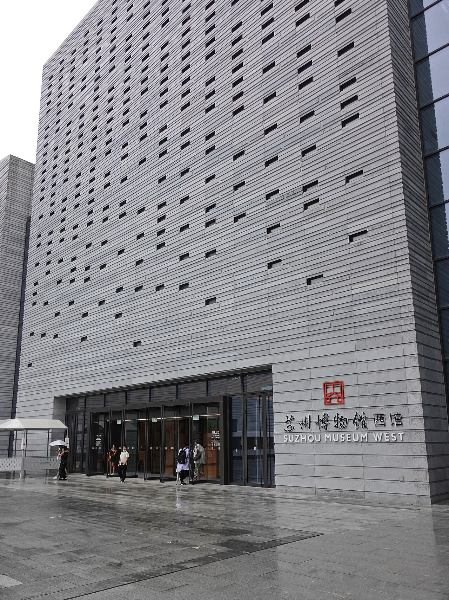
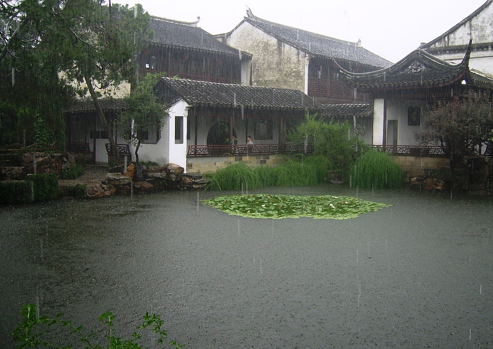
Tue, Sep 15Suzhou → Nanjing · museums + Qinhuai night苏州 → 南京 · 博物馆+秦淮夜🚄 + lantern boat🚄 + 画舫
- 🚄 Take an early Suzhou Station → Nanjing South train and drop luggage first.尽量选早班苏州站→南京南，先放行李。
- If arrival timing entry document, visit Presidential Palace and Nanjing Museum in the afternoon; if delayed or tired, choose only one rather than compressing the evening.若到达时间允许，下午安排总统府 + 南京博物院；如晚点或疲劳则二选一，不压缩晚间休息。
- Keep the planned Confucius Temple + Qinhuai River night boat + Laomendong evening. Detail: Nanjing-3Day-Plan.md ↗ · Day1 map ↗保留夫子庙 + 秦淮河画舫 + 老门东。详案：Nanjing-3Day-Plan.md ↗。
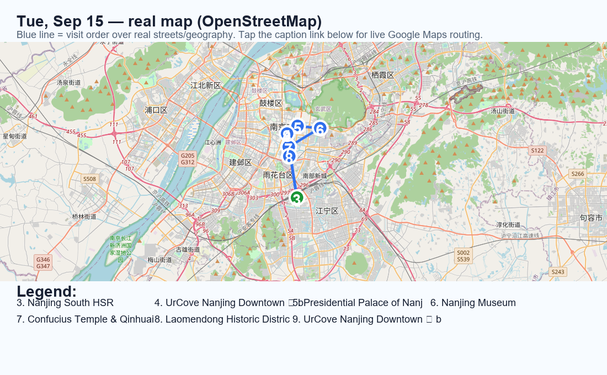
① Suzhou old-town hotel area → ② Suzhou Station → ③ Nanjing South HSR → ④ Nanjing Confucius Temple / Xinjiekou hotel area → ⑤ Presidential Palace of Nanjing → ⑥ Nanjing Museum → ⑦ Confucius Temple & Qinhuai River → ⑧ Laomendong Historic District → ⑨ Nanjing Confucius Temple / Xinjiekou hotel area① 苏州老城酒店区 → ② 苏州站 → ③ 南京南站 → ④ 南京夫子庙/新街口酒店区 → ⑤ 总统府 → ⑥ 南京博物院 → ⑦ 夫子庙·秦淮河 → ⑧ 老门东 → ⑨ 南京夫子庙/新街口酒店区
🧭 Open multi-stop route in Google Maps🧭 在 Google Maps 打开多点路线

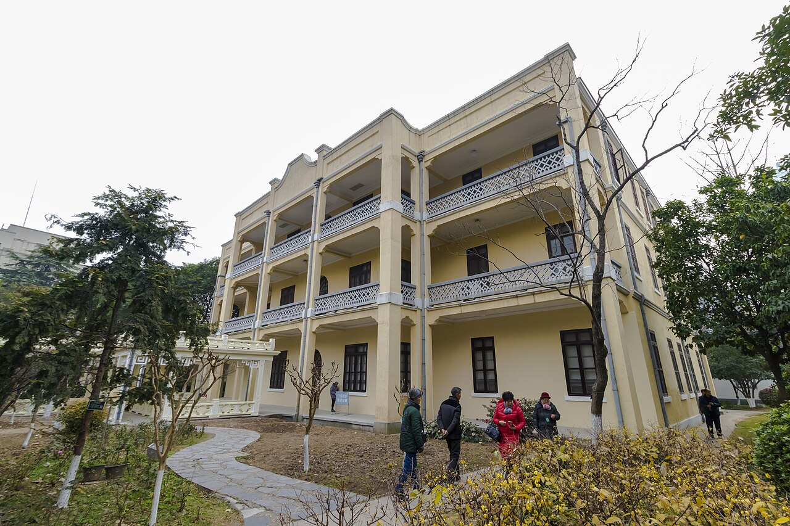
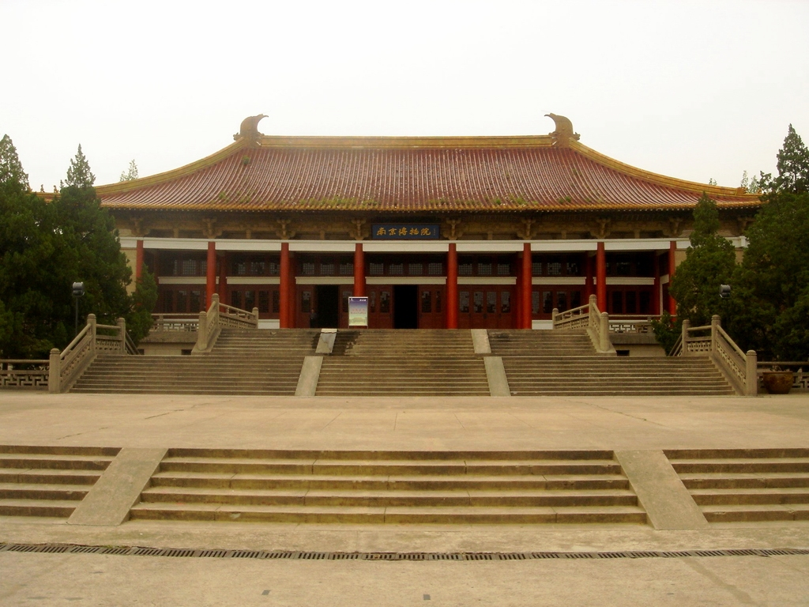

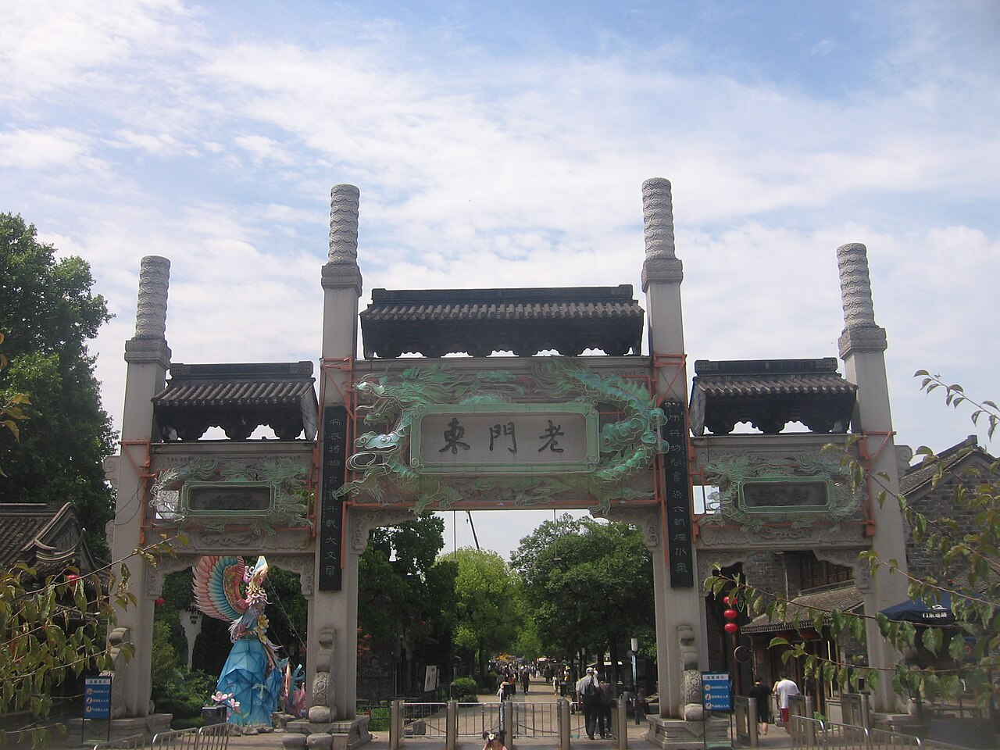
Wed, Sep 16Nanjing full-day upscale bathhouse南京全日高端洗浴中心♨️ 10:00–20:30♨️ 10:00–20:30
- 10:00–20:30 — No. 9 Hot Spring Life Center (Nanjing), the selected full-day upscale bathhouse. Baths, sauna/steam, common lounge/cinema/games, optional massage/private room and long recovery blocks for Mom.10:00–20:30 九号汤泉生活馆（南京店）：泡浴/桑拿、公共休息区/影院/游戏，可选按摩或包间，给Mom充分休息。
- The reported weekday 18-hour package is about ¥380 and includes breakfast, late-night food, and either lunch or dinner; verify which main meal is included and the second-meal surcharge before paying.公开资料显示工作日18小时套餐约¥380，含早餐、夜宵及午餐或晚餐之一；付款前确认包含哪顿正餐及第二顿加价。
- Verified seafood reports mention oysters, abalone, hairy crab, salmon/sashimi and tiger prawns; supply changes daily. Wet areas are gender-separated; the family regroups in uniformed common areas. Detail: Nanjing-3Day-Plan.md ↗ · Day2 map ↗已核实海鲜报道包括生蚝、鲍鱼、大闸蟹、三文鱼/刺身、虎虾；每日供应会变。湿区男女分开，穿馆服后在公共区会合。
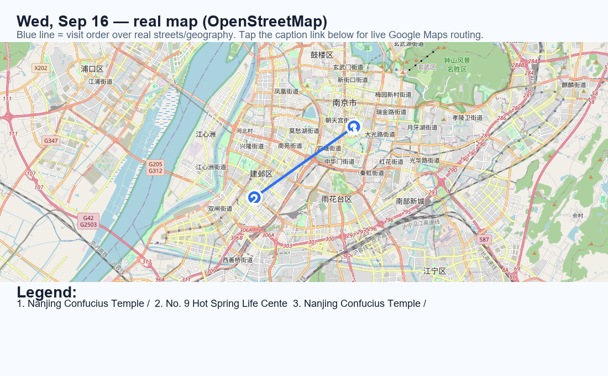
① Nanjing Confucius Temple / Xinjiekou hotel area → ② No. 9 Hot Spring Life Center → ③ Nanjing Confucius Temple / Xinjiekou hotel area① 南京夫子庙/新街口酒店区 → ② 九号汤泉生活馆（南京店） → ③ 南京夫子庙/新街口酒店区
🧭 Open multi-stop route in Google Maps🧭 在 Google Maps 打开多点路线
Thu, Sep 17Nanjing South → Zhejiang Taizhou南京南 → 浙江台州🚄 G7599 reference🚄 G7599 参考
- After breakfast/check-out, go directly to Nanjing South; Yihe Road is deleted to protect the 09:20 departure.早餐退房后直接去南京南站；颐和路已删除，保护09:20发车。
- 🚄 Current reference: G7599 Nanjing South 09:20 → Taizhou West Station 14:02. Re-check the final 2026 timetable and station name on 12306 when tickets go on sale around Sep 3.当前参考：G7599 南京南09:20→台州西站14:02。约9/3开售后必须在12306复核最终运行图和到站名。
- Reserved vehicle from Taizhou West Station to Hilton Taizhou in Jiaojiang (about 30–45 min); check in/rest, then a quality seafood dinner. Day3 map ↗台州西站预约车去椒江台州希尔顿（约30–45分钟），入住休息后吃稳定的海鲜晚餐。
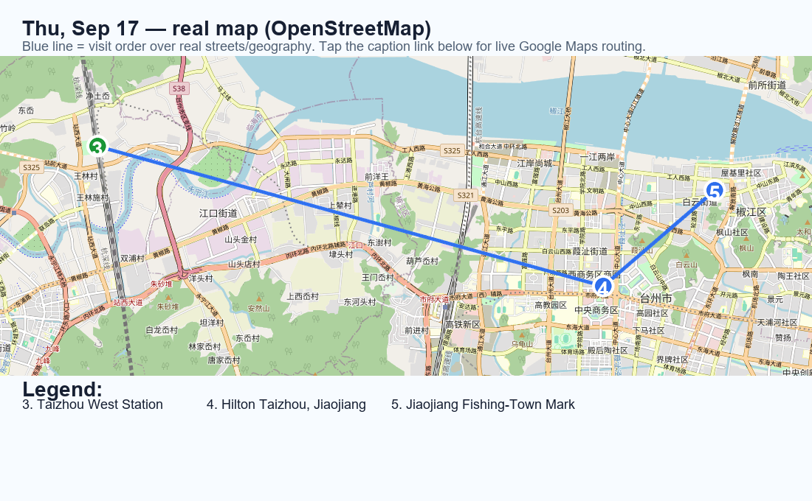
① Nanjing Confucius Temple / Xinjiekou hotel area → ② Nanjing South HSR → ③ Taizhou West Station → ④ Hilton Taizhou, Jiaojiang → ⑤ Jiaojiang Fishing-Town Market① 南京夫子庙/新街口酒店区 → ② 南京南站 → ③ 台州西站 → ④ 台州希尔顿（椒江） → ⑤ 椒江渔都小镇
🧭 Open multi-stop route in Google Maps🧭 在 Google Maps 打开多点路线

Fri, Sep 18Linhai day trip from Jiaojiang椒江出发临海一日游🐟 No climbing🐟 不爬城墙
- Stay both nights at Hilton Taizhou in Jiaojiang and use a private car for the Linhai day trip; do not move luggage.两晚都住台州希尔顿（椒江），包车往返临海，不搬行李。
- 10:15–11:00 Linhai East Lake, flat section near parking → seated lunch → 12:30–14:15 only a 500–800 m stretch of Ziyang Street → 14:20–14:50 low courtyards of Longxing Temple.10:15–11:00 临海东湖平缓湖岸 → 坐下午餐 → 12:30–14:15 紫阳街500–800米短段 → 14:20–14:50 龙兴寺低处院落。
- No Jiangnan Great Wall city-wall climb. Ziyang Street is in Linhai City, not Jiaojiang. Return to Jiaojiang for rest and a stable seafood dinner.明确不登江南长城。紫阳街位于临海市，不是椒江区。返回椒江休息和晚餐。
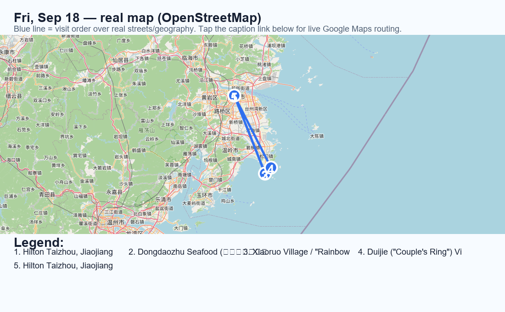
① Hilton Taizhou, Jiaojiang → ② Linhai East Lake → ③ Ziyang Street → ④ Longxing Temple → ⑤ Hilton Taizhou, Jiaojiang① 台州希尔顿（椒江） → ② 临海东湖 → ③ 紫阳街 → ④ 龙兴寺 → ⑤ 台州希尔顿（椒江）
🧭 Open multi-stop route in Google Maps🧭 在 Google Maps 打开多点路线
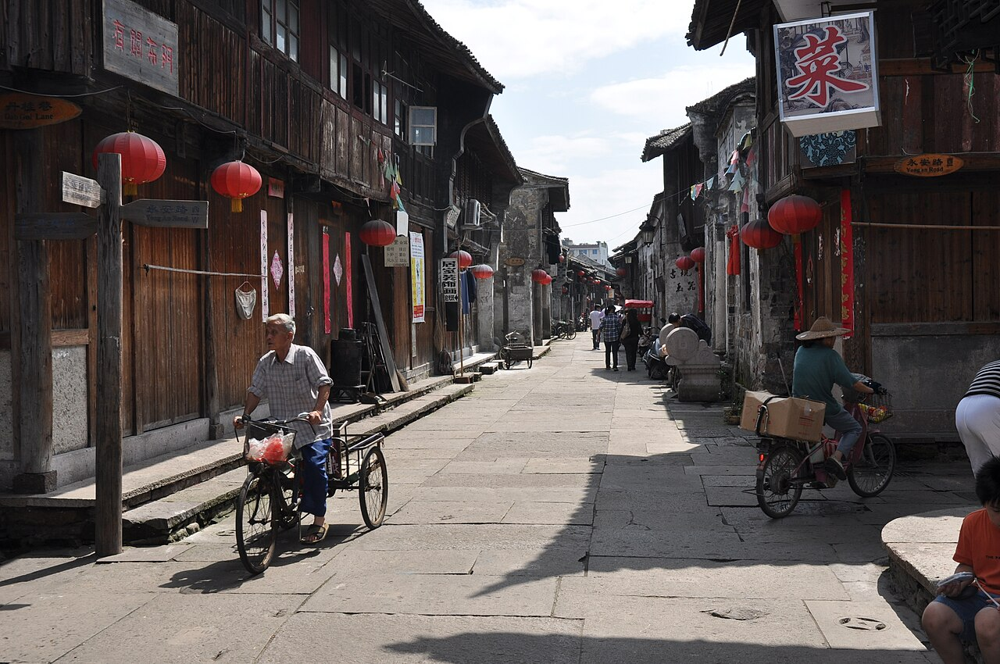
Sat, Sep 19Zhejiang Taizhou → central Shanghai · Bund night台州 → 上海市中心 · 外滩夜🚄 + skyline🚄 + 天际线
- 🚄 Depart from Taizhou Station (not Taizhou West), which is close to Jiaojiang/Hilton Taizhou. Prefer a direct train leaving about 09:30–12:00; final choice after 12306 sales open.🚄 台州 → 上海虹桥/上海 高铁；抵上海市中心，放行李、休息。
- Evening: The Bund riverfront promenade + Lujiazui skyline. This is the real Shanghai skyline night; keep it flat and photo-focused, optionally add a Huangpu River night cruise.晚上：外滩滨江步道 + 陆家嘴天际线。这晚才是正式上海夜景；全程平地拍照，可选黄浦江夜游船。
- Stay central Shanghai (Waldorf Astoria on the Bund / Conrad / equivalent). 🏨 hotel notes ↗住上海市中心（外滩华尔道夫 / Conrad / 同级）。🏨 住宿说明 ↗
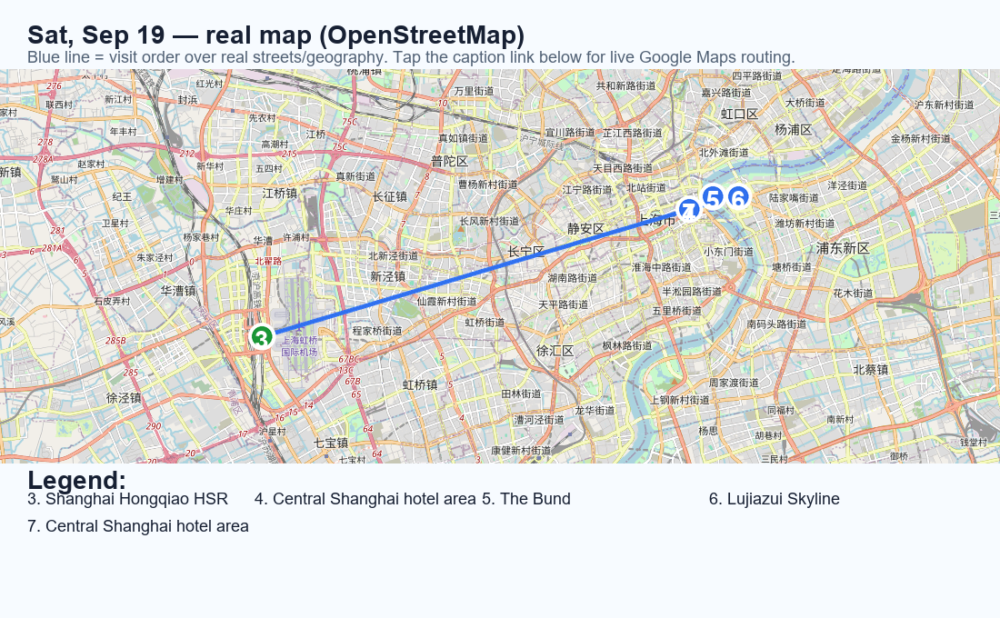
① Hilton Taizhou, Jiaojiang → ② Taizhou Station → ③ Shanghai Hongqiao HSR → ④ Central Shanghai hotel area → ⑤ The Bund → ⑥ Lujiazui Skyline → ⑦ Central Shanghai hotel area① 台州希尔顿（椒江） → ② 台州站 → ③ 上海虹桥站 → ④ 上海市中心酒店区 → ⑤ 外滩 → ⑥ 陆家嘴天际线 → ⑦ 上海市中心酒店区
🧭 Open multi-stop route in Google Maps🧭 在 Google Maps 打开多点路线


Sun, Sep 20Central Shanghai → Pudong (PVG) → Seattle上海市中心 → 浦东 PVG → 西雅图🛫 Fly home🛫 回家航班
- Morning — easy central Shanghai breakfast / final shopping. No long-distance rail today.上午 — 上海市中心早餐/最后购物；今天不排长途高铁。
- Move from central Shanghai to Pudong Airport (PVG) with a large time buffer; target ~14:00 at PVG.上海市中心 → 浦东机场 PVG，留足堵车缓冲；目标约14:00 到 PVG。
- ✈️ Delta DL280 PVG 17:30 → Seattle same-day 13:50. Home ✅.✈️ Delta DL280 PVG 17:30 → 西雅图同日 13:50。回家 ✅。
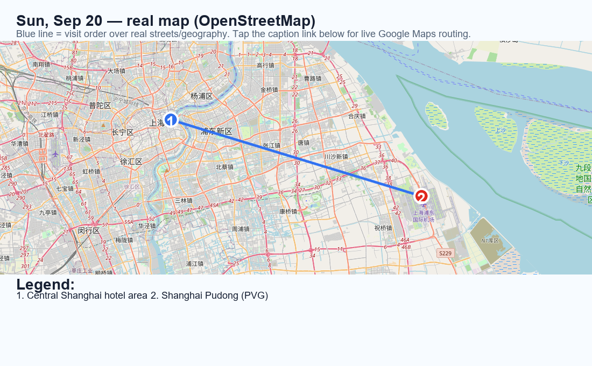
① Central Shanghai hotel area → ② Shanghai Pudong (PVG)① 上海市中心酒店区 → ② 浦东机场 (PVG)
🧭 Open multi-stop route in Google Maps🧭 在 Google Maps 打开多点路线

Shanghai🍜 Shanghai Eats & Sights — 24 saved spots (by district)🍜 上海美食·景点 — 收藏 24 处（按区）Food美食
From your Google list ‘上海吃喝玩乐’ (dianping探店 picks), de-duplicated against the main Shanghai days.来自你的 Google 收藏『上海吃喝玩乐』（大众点评探店），已与上海主行程去重。
Weave these into the last two Shanghai days by district; pins use exact coordinates.按区穿插到最后两天上海行程；图钉为精确坐标。
Huangpu · Bund / Nanjing Rd黄浦·外滩/南京路
Jing'an · West Nanjing Rd静安·南京西路
Xuhui · Former French Concession徐汇·衡复风貌区
Hongkou · North Bund虹口·北外滩
Pudong · Lujiazui浦东·陆家嘴
Info参考Where we stay — hotel notes per city🏨 住宿（各城 · 点开看选择说明）住宿住宿
每城住宿的选择理由 / 地址 / 备选见专门文档 master-plan-hotel.md（下方渲染版可直接跳到对应城市）：
- 🗺️ 台北选址交互地图：已订 Hotel Resonance Taipei + 此前候选 + 你全部台北标记同图比位置 — hotels map ↗选址地图 ↗
- 🏨 台北 · Hotel Resonance Taipei ✅ 已订（Tapestry Collection by Hilton · 林森南路7号, 中正区, 台北 · 已订）— hotel notes ↗选择说明 ↗
- 🏨 上海虹桥抵达夜 · Cordis / Hyatt（9/13 近虹桥枢纽，七宝老街轻晚餐）— hotel notes ↗选择说明 ↗ · Shanghai-Hongqiao-Arrival.md ↗
- 🏨 苏州老城 · Atour X 观前街优先（9/14，少走路园林日）— hotel notes ↗选择说明 ↗ · Suzhou-Day-Plan.md ↗
- 🏨 南京 · Hampton 夫子庙 / Hilton 建邺（9/15–9/16，秦淮夜游+南站）— hotel notes ↗选择说明 ↗ · Nanjing-3Day-Plan.md ↗
- 🏨 浙江台州 · 台州希尔顿（椒江）连住两晚（9/17–9/18，开渔海鲜+紫阳街）— hotel notes ↗选择说明 ↗
- 🏨 杭州 · 未采用/备选（Canopy 西湖 / Conrad；本锁定主线已删除杭州日）— archived notes ↗备选说明 ↗
Info参考Before you go — transport & payments🧭 行前须知 · 交通与支付（EasyCard / eSIM / 现金 / 包车）行前须知行前须知
① 悠游卡 EasyCard（捷运 / 公交 / 便利店）
- 哪里买：桃园 T2 入境大厅 7-11 / 全家（24h）随时买+加值；或 电子票证柜台 08:00–22:00（21:00 到还开，如果超过 22:00 就去超商）。
- 价格：空卡 NT$100（≈US$3）/张（工本费不退）；每人加值 NT$500–600（≈US$16–19）（机场捷运 T2→台北车站约 NT$150（≈US$5）/人 + 3 天捷运公交）。5 人各一张。
- 💵 为什么带现金买：悠游卡加值(储值)全台只能付现金——便利店/捷运机器都不收信用卡储值（刷卡只能买东西、不能加值）；但买 SIM 的电信柜台可刷国际信用卡。
- 能用：台北捷运、公交、机场捷运、便利店；去九份/阳明山的公交/台铁也能刷。
- ⚠️ 美区 Apple ID 的 iPhone 不能把悠游卡加入钱包；但捷运闸机可刷 Apple Pay（公交/夜市不行）。离台前余额可在捷运服务台退（扣 NT$20（≈US$1））。
② eSIM / 上网（台北 3 天 · 5 人 · 手机全解锁）
- 方案A（最推荐 · 会分头行动就选它）：桃园机场买 2 张中华电信 3 天无限实体卡（NT$300/张 ≈US$9，含台湾本地 +886 号），2 人开热点分流给其余 3 人。实体卡苹果+国行小米都能用（国行小米装不了 eSIM）；柜台可刷国际信用卡、凭旅行文件即办。
- 方案B（全程几乎不分开）：租 Pocket WiFi 蛋（机场取还，最多 5 台，3 天约 US$22–28，Klook/KKday 先订更便宜）；走散没网、要带充电宝、离境原地还。
- 方案C（补充）：Airalo 台湾 3 天无限 eSIM ≈US$12.5/张——仅当手机全是苹果/海外版才可行，国行小米不可。
- ⚠️ 大陆段（7 天受网络限制）另需可直连境外网站的 eSIM（Airalo 亚洲/Nomad，落地即用免 VPN）；台湾实体卡到大陆后不能用，过关进大陆前就装好。详见 esim.md。
- 共通：全程关掉美国主卡数据漫游；eSIM 激活＝设置→启用套餐→开数据漫游→选它为数据线路。
③ 现金 & 支付
- 💵 完整换汇方案（ATM 首选 · 各银行卡对比 · DCC · 申报）→ Full FX guide ↗完整换汇方案 ↗
- 换现（ATM 首选）：台湾本地银行 ATM（台银/CTBC/国泰世华）不另收操作费，拒绝 DCC、选新台币 TWD最划算；Schwab/Wise/Revolut 卡免外汇费，BoA/Chase(3%+$5/笔)一次取足。柜台备用：台银 24h·每笔 NT$30（≈US$1），先换 NT$5,000–8,000（≈US$158–253）。
- 换多少：5 人 3 天建议 NT$12,000–16,000（≈US$379–505）；当晚先取 NT$10,000–15,000（≈US$316–474）。
- 刷卡好用：酒店 / 商场 / 101 / 鼎泰丰 / 便利店 / 捷运闸机；夜市、九份小摊、传统早餐店多收现金。⚠️ 悠游卡加值只能现金。
④ 7 座包车 / 接机（怎么约、哪个 App 划算）
- 接机（9/10 T2→Hotel Resonance Taipei）：Klook / KKday 预约 7 座私家车 NT$1,800–2,200（≈US$56–68），含举牌接机+航班追踪+英文，深夜最稳。55688 更便宜但要台湾手机号；UberXL（最多 6 人）无举牌、不追踪航班、深夜不保证。
- 9/12 北投汤屋/交通（推荐默认）或九份/阳明山 7/9 座包车（备选）：统一按 全日 NT$3,400–3,900（≈US$107–123） 预算；来源：KKday Taipei Private Charter 当前 9-seater（4–7 pax）from US$120.11，Klook/KKday 动态价付款前复核。
- 贴士：Klook 与 KKday 先比价（差价常 NT$200–400（≈US$6–13））；周六 9/12 提前 5–7 天订；备注「elderly passenger 长辈」。
Info参考Five summaries (reservations / packing / food / budget / Plan B)📋 五个总结（预约 · 准备 · 美食 · 花费 · Plan B）总结总结
1️⃣ 必须提前预约 / 当天用 App
| 项目 | 哪天 | 提前 | 渠道 | 价格 |
|---|---|---|---|---|
| 桃园接机 7 座 van | 9/10 | 3–7 天 | Klook/KKday | NT$1,800–2,200（≈US$57–69） |
| 九份/阳明山 7/9 座全日包车（备选） | 9/12 | 5–7 天 | Klook/KKday | 全日 NT$3,400–3,900（≈US$107–123） |
| 台北101 观景台 / 快速通关 | 9/11 | 当天/前一天 | taipei-101/Klook | NT$600（≈US$19） / 快通 NT$1,200（≈US$38） |
| 故宫英文导览（选做） | 9/11 | 官网预约 | npm.gov.tw | 含导览费 |
| 鼎泰丰 | 9/11 | 无需预约·现场取号 | 鼎泰丰取号 | — |
| 35F 星巴克（选做，替代 101） | 9/11 | 3 天·电话 | (02)8101-0701 | 低消 NT$250（≈US$8）/人 |
🎫 全程每个点是否需预约 + 提前几天（含大陆实名预约：拙政园/苏州博物馆/南京博物院/明孝陵/秦淮夜游）→ Reservations ↗预约说明 ↗。
🚄 华东高铁路线 Plan（已按 9/13–9/20 锁定线同步：虹桥→苏州→南京→台州→上海；杭州仅存档/未采用）→ HSR plan ↗高铁 Plan ↗ · 🗺️ HSR map ↗高铁地图 ↗
2️⃣ 出发前准备清单
- 入境：所需入境文件纸质原件；需填报者在抵达前 7 天内完成 TWAC（地址填实际入住的 Hotel Resonance Taipei）；禁带肉制品。
- 网络：eSIM（见 esim.md）或桃园买 SIM。悠游卡：每人储值 NT$500–600（≈US$16–19）。
- 现金：NT$12,000–16,000（≈US$379–505）；ATM 拒 DCC。信用卡/Apple Pay 商场/101/捷运好用，夜市收现金。
- App：Google Maps、Uber、鼎泰丰取号、中央气象署 CWA、Klook/KKday。
- 天气：9 月闷热 ~31.5°C、多雨、台风季 → 折伞、透气衣、防滑鞋、补水。
3️⃣ 三天美食（少量 · 多样 · 顺路）
- 🔴 一定吃：鼎泰丰小笼包(101 B1) · 劉山東牛肉面 · 三元號卤肉饭 · 蚵仔煎(宁夏) · 胡椒饼(饶河) · 九份芋圆 · 珍奶 · 台式早餐。
- 🟡 有机会：豆花 · 刈包 · 药炖排骨 · 阿宗面线(西门) · 草仔粿 · 凤梨酥；正餐台菜→欣叶(中山)。
- ⚪ 可跳过：网红排队甜点 · buffet(饗食天堂) · 太远的士林夜市。
4️⃣ 三天预计花费（5 人 · 不含机票/酒店）
| 类别 | TWD | ≈USD |
|---|---|---|
| 交通（接机+送机+9/12 包车+悠游卡） | 9,000–13,000 | 278–402 |
| 景点门票（故宫+101） | 3,500–4,800 | 108–148 |
| 正餐（午/晚含鼎泰丰） | 12,000–16,000 | 371–495 |
| 夜市（3 晚） | 4,500–7,500 | 139–232 |
| 奶茶/咖啡 | 1,500–2,500 | 46–77 |
| 伴手礼/杂费/预备金 | 4,000–7,000 | 124–216 |
| 合计 | ≈34,500–50,800 | ≈US$1,067–1,571 |
5️⃣ Plan B（台风 / 暴雨 / 高温 / 101 能见度差）
- 台风/豪雨：取消九份/阳明山 → 室内（故宫补看、101 Mall、京站/信义百货、迪化街骑楼、火锅）。
- 101 能见度差：先别上观景台（低能见度普通票不退款）→ 改鼎泰丰+百货+临江街，好转再补。
- 高温：多安排室内冷气路线，Mom 午后强制休息，随身补水。
- 航班/末班车：9/10 即使延误，机场捷运末班快车 22:55、预约 van 会追踪航班。